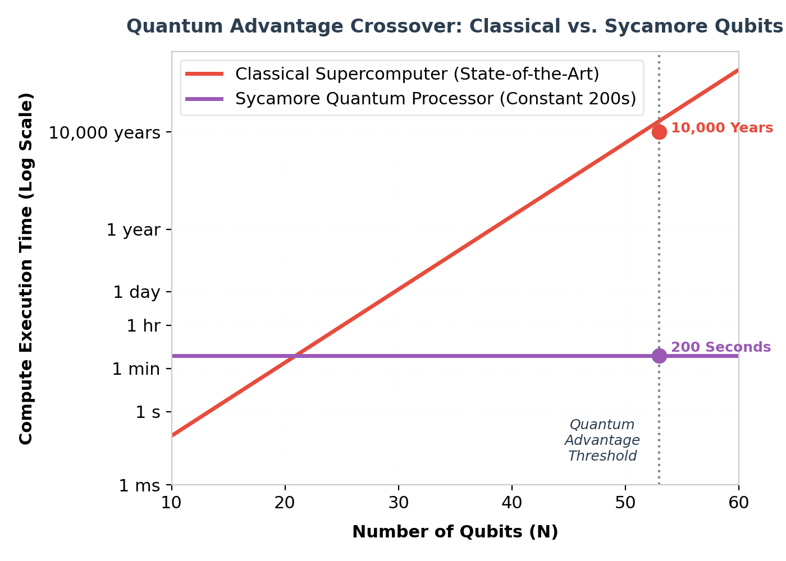

In 1982, Richard Feynman proposed that simulating quantum mechanical systems with classical supercomputers is fundamentally limited by exponential scaling, suggesting instead that a computer built out of quantum systems could perform these calculations efficiently. In October 2019, Google AI Quantum demonstrated the first experimental validation of this concept—achieving a milestone known as quantum supremacy (or quantum advantage).
Using a custom, programmable superconducting processor named Sycamore, the team performed a specific computational benchmark that would take classical supercomputers millennia to solve, establishing a new paradigm for computing.
"Our Sycamore processor takes about 200 seconds to sample one instance of a quantum circuit a million times—our benchmarks indicate that the equivalent task for a state-of-the-art classical supercomputer would take approximately 10,000 years."
The Benchmark: Random Circuit Sampling
To demonstrate quantum advantage, the team chose the task of Random Circuit Sampling (RCS). In RCS, a random sequence of single-qubit and two-qubit quantum gates is applied to a set of qubits, and the resulting quantum state is measured.
Because quantum states exist in a superposition of all possible configurations, the measurement outputs form a complex probability distribution. For $N$ qubits, the state-space grows exponentially as $2^N$. For the 53 active qubits of the Sycamore processor, the dimension of the computational state-space is $2^{53} \approx 9 \times 10^{15}$ (about 9 quadrillion amplitudes).
Simulating this space requires storing and updating 9 quadrillion complex numbers, which quickly overflows the memory capacity of even the largest classical supercomputers.

Verifying the Quantum State: Cross-Entropy Benchmarking
To verify that the processor was indeed producing the correct quantum states (rather than random noise), the team developed a verification metric called Cross-Entropy Benchmarking (XEB).
The XEB fidelity $F_{XEB}$ measures how closely the experimental samples match the probabilities calculated from classical simulation. For small circuits, the outputs were verified on supercomputers. For larger circuits where exact simulation was impossible, the fidelity was extrapolated, demonstrating that the system maintained quantum coherence across the entire 53-qubit array.
Python Demonstration: Building a Random Circuit in Cirq
Google's open-source framework Cirq was designed to write and run algorithms on Google's quantum hardware. The code below shows how to construct a random quantum circuit on a grid of superconducting qubits using Cirq:
import cirq
import random
# Create a 3x3 grid of qubits representing a subset of Sycamore
qubits = [cirq.GridQubit(i, j) for i in range(3) for j in range(3)]
# Build a random quantum circuit
def make_random_circuit(qubits, depth=5):
circuit = cirq.Circuit()
# Predefined single-qubit gates
gates = [cirq.X**0.5, cirq.Y**0.5, cirq.T]
for _ in range(depth):
# 1. Apply random single-qubit gates
for q in qubits:
circuit.append(random.choice(gates)(q))
# 2. Apply entangling two-qubit CZ gates between adjacent qubits
for i in range(len(qubits) - 1):
q1, q2 = qubits[i], qubits[i+1]
# Check if they are adjacent on the grid (Manhattan distance = 1)
if abs(q1.row - q2.row) + abs(q1.col - q2.col) == 1:
circuit.append(cirq.CZ(q1, q2))
# Add measurement operators to all qubits
circuit.append(cirq.measure(*qubits, key='result'))
return circuit
# Construct and display circuit
circuit = make_random_circuit(qubits, depth=3)
print(f"Generated Random Circuit (qubits: {len(qubits)}):\n")
print(circuit)
# Simulate the circuit locally
simulator = cirq.Simulator()
result = simulator.run(circuit, repetitions=100)
print("\nSampled measurement outcomes (first 5 samples):")
print(result.data['result'].head(5))
This historic achievement marked the transition of quantum computing from a theoretical field to an experimental reality, opening the door to research into error-corrected hardware, quantum chemistry, and physics simulations.